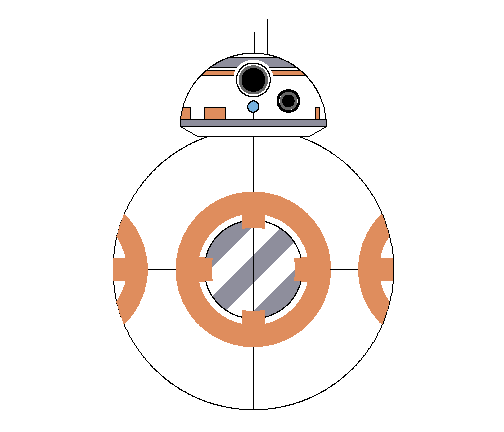
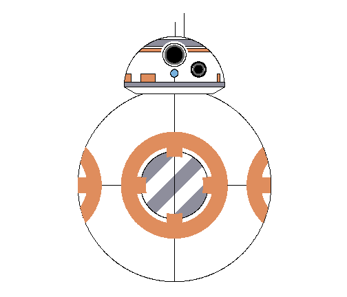

"GGplot2 is an R package created by Hadley Wickham in 2005. It can highly improve the quality and aesthetic of your graphs ! " (THE R GRAPH GALLERY)
Ejemplo: The R graph gallery/DataArt

Santiago Barrios Sarmiento
"GGplot2 is an R package created by Hadley Wickham in 2005. It can highly improve the quality and aesthetic of your graphs ! " (THE R GRAPH GALLERY)
Ejemplo: The R graph gallery/DataArt

Other Examples

publish(user = "SantiagoBarrios", repo = "slidify")
## Publishing deck to SantiagoBarrios/slidify
## Warning: comando ejecutado 'git push git@github.com:SantiagoBarrios/slidify
## gh-pages' tiene estatus 128
## You can now view your slide deck at http://SantiagoBarrios.github.com/slidify